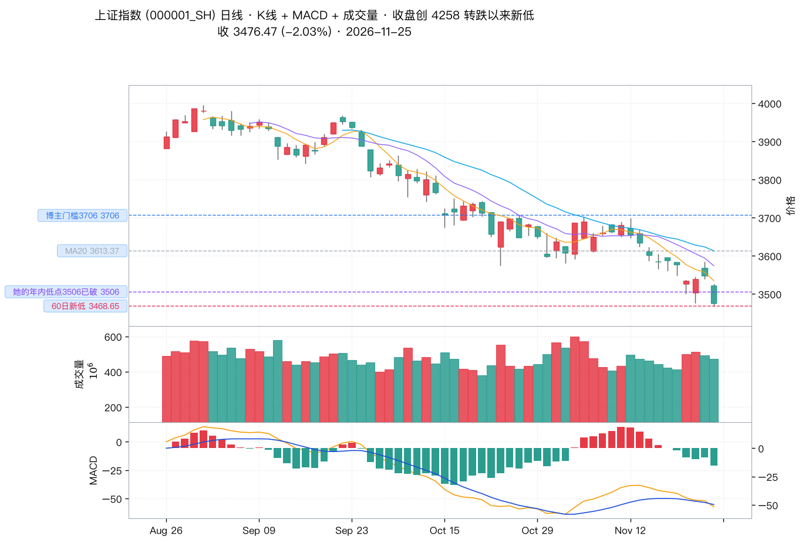
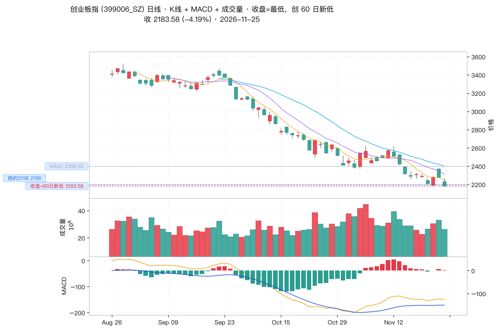
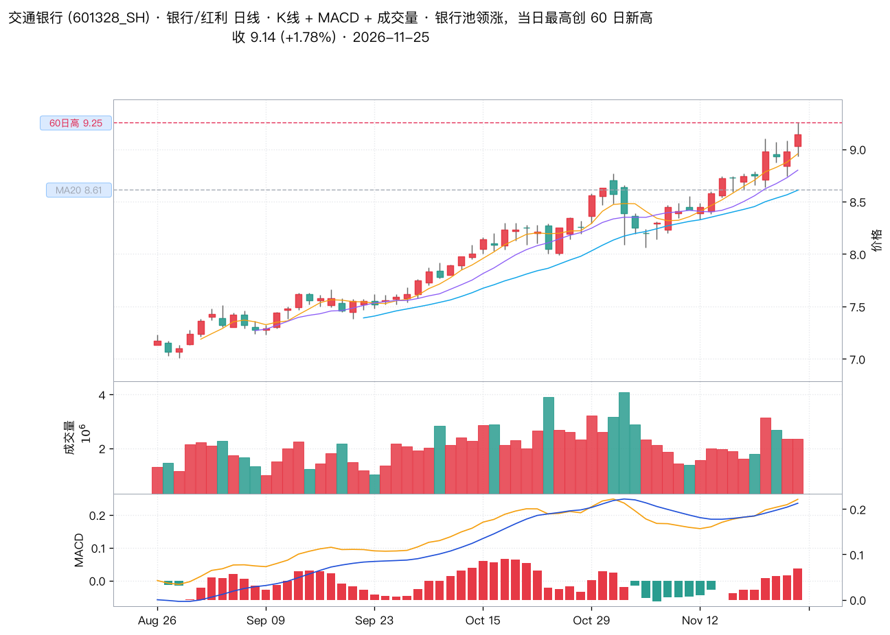
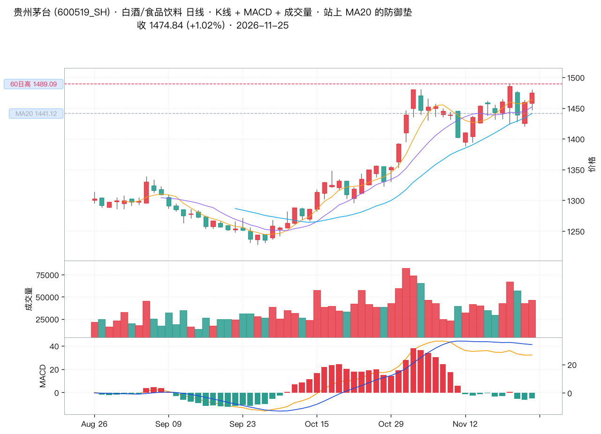
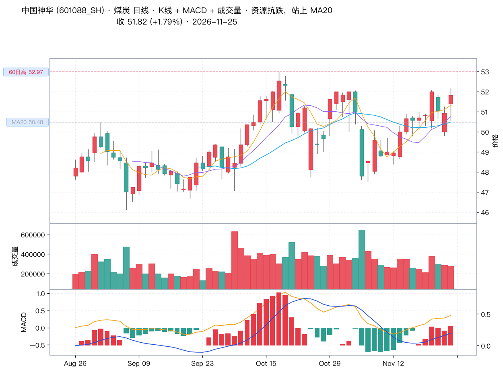

🟢 15:00「今天大盘指数收出自4258点转跌以来的新低」——分毫不差：沪指收 3476.47、最低 3468.65，是 4258.86（5/14 高点）以来新低；创业板收 2183.58 = 全天最低。她今天没给任何买点，22:42 自认「想不到市场会超过预期的3506点……我也在反思中」。31 个申万一级行业无一均值收正，唯一能做的是防守。
| 时间 | 信号 | 原文（逐字） | 判读 / 日线实测 |
|---|---|---|---|
| 06:36 | 外盘 | 「昨晚美国股市分化，收盘道指上涨423点，纳指跌356点、标普下跌36点。」 | 分毫不差：11/24 收 DJI +423.39 / IXIC −356.02 / SPX −36.07（外盘播报连续第 6 次全中） |
| 08:46 | 外盘 | 「日本股市目前下跌1606点，韩国股市下跌4.8%。」 | 盘中口径：日经收 −1633.01 点（−2.78%）、韩综收 −308.52 点（−6.16%），发帖时成立、收盘跌幅更大 |
| 09:47 | 定性 | 「按短线看，市场需要等待二次下探成功之后才能稳点。」 | 方向一致：11/23 探 3476.65 后二次下探至 3468.65；但「成功」须等收复，当日无法核验 |
| 11:34 | 商品 | 「碳酸锂期货只反抽到了93620元，今天跌破了86360元。」 | 两个数字分毫不差：93620 = 11/20 最高；86360 = 11/04、11/11 前低，今日最低 82220 已破 |
| 14:12 | 点位 | 「现在创业板指数在2198下面了，郁闷！」 | 成立：创业板最低=收盘 2183.58，全天在 2198 下方 |
| 15:00 | 核心 | 「今天大盘指数收出自4258点转跌以来的新低」 | 分毫不差：沪指收 3476.47、低 3468.65，4258.86（5/14 高点）以来新低 |
| 20:58 | 商品 | 「伦敦金今天试了3484.25美元。自5598.75美元之后的判断完成了任务。」 | 成立：3484.25 落在今日区间（20:07 报 3498.92，日内最低 3426.64）；5598.75 = 2026 年 1 月历史高点，官方口径一致 |
| 22:42 | 自省 | 「……但是想不到市场会超过预期的3506点……是我老了？还是市场在走极端？我也在反思中！」 | 3506 已被跌破（11/23 低 3476.65、今日 3468.65）；她本人承认点位框架在此失效 |
其余 11 条为话题帖、情绪帖与「我拒不投降」类风控表述，无可证伪判据。

开 3522.59 / 高 3526.34 / 低 3468.65 / 收 3476.47。MA20 3613.37 已失守，距她的门槛 3706 差 229.53 点（6.19%）。

开 2233.18 / 高 2274.18 / 最低=收盘 2183.58，全天无承接；比她 14:12 报的 2198 低 14.42 点。
| 板块 | 池均值 | 涨跌家数 | 申万口径交叉 | 打法 |
|---|---|---|---|---|
| 白酒/食品饮料 | +0.37% | 4 涨 3 跌 | 食品饮料 42涨/120跌，全场跌得最少 | 唯一收正池，防御底仓 |
| 银行/红利 | +0.15% | 2 涨 4 跌 | 银行 17涨/22跌，最抗跌行业 | 红利底仓，交行创 60 日高 |
| 煤炭/资源 | -0.18% | 2 涨 2 跌 | 煤炭 9涨/29跌，相对抗跌 | 抗跌补仓，只做龙头 |
今天没有主线。申万 31 个一级行业无一均值收正，池里 18 个板块有 15 个收跌，且跌幅集中在科技链：光刻胶/材料 −9.52%（0涨12跌）· 先进封装 −8.32% · 半导体设备 −8.32% · 存储 −7.10% · 交换机 −6.34% · GPU/CPU −5.93%。因此这 3 块全是低波防御，不是三条主线，按一份仓位算。
| 标的 | 收盘 | 涨跌幅 | 关键位 | 动作 |
|---|---|---|---|---|
| 601328 交通银行 | 9.14 | +1.78% | MA20 8.61 上方；最高 9.25 = 60 日新高 | 底仓垫：回踩 MA20 可分批 |
| 600519 贵州茅台 | 1474.84 | +1.02% | MA20 1441.12 上方；距 60 日高 1489.09 差 0.96% | 防御垫：破 MA20 放弃 |
| 601088 中国神华 | 51.82 | +1.79% | MA20 50.48 上方；60 日高 52.97 | 抗跌垫：不加仓 |

交通银行 9.14 +1.78%，当日最高 9.25 创 60 日新高，量比 95%（缩量上涨）。

贵州茅台 1474.84 +1.02%，站上 MA20 1441.12，量比 91%（缩量上涨）。

中国神华 51.82 +1.79%，站上 MA20 50.48，量比 96%（缩量上涨）。
| 项 | 她说的 | 日线实测 | 判定 |
|---|---|---|---|
| 年内低点 3506 | 「想不到市场会超过预期的3506点」 | 11/23 低 3476.65 已破，今日 3468.65，再低 37.35 点 | 已被证伪（22:42 她自己承认） |
| 点位框架 | 11/19「必须等C5完成之后才参与」→ 11/21「抄C5抄成了股Z」→ 今日「超过预期的3506点」 | 连续三期自认点位失效，退回风控与意志 | 状态变化：点位不可再当买点条件 |
| 11/23 选的三只 | 宇树 / 风华高科 / 中际旭创 | 今日全部跌破 MA20，跌 4.18% / 6.16% / 1.92% | 状态变化：上一期选股隔日全破 MA20 |
其余一致：外盘三数字（道指 +423.39 / 纳指 −356.02 / 标普 −36.07）、碳酸锂 93620 与 86360、伦敦金 3484.25 与历史高 5598.75、4258 以来新低、14:12 创业板破 2198 —— 7 条全部成立；亚市两条为盘中口径，不计入命中也不计入失误。
采集：weibo skill 两轮补采（时间线 9 条 + 搜索 101 词）+ 跨文件汇总，共 19 条 11/25 帖（早间 06:31–08:46 五条由历史采集文件补回）。行情：Tushare Pro 日线（前复权，基准取最新日）；外盘：Tushare index_global + 新浪实时。
免责声明：本报告为对公开微博观点的逐条核验记录，观点与持仓均属博主本人，不代表任何投资建议；数据可能存在延迟或口径差异，据此操作风险自负。